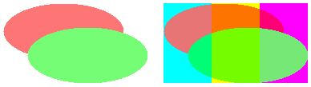
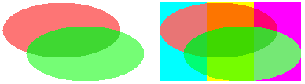

Практическое руководство. Использование режима комбинирования для управления альфа-смешением
Могут возникнуть ситуации, когда нужно создать в битовом изображении, который имеет следующие характеристики:
Цвета имеют альфа-значения, которые меньше 255.
Не выполняется альфа-смешение цветов друг с другом при создании точечного рисунка.
При отображении завершения растрового изображения, цвета в битовой карте, альфа-смешением с фоновыми цветами на устройстве отображения.
Чтобы создать такой точечный рисунок, создайте пустой Bitmap объекта, а затем постройте Graphics на его основе объект. Установка режима комбинирования для Graphics объект CompositingMode.SourceCopy.
Пример
В следующем примере создается Graphics на основе Bitmap объекта. Код использует Graphics вместе с двумя полупрозрачными кистями (альфа-канал = 160) для рисования изображения на точечный рисунок. Код заполняет красного и зеленого эллипса, с помощью полупрозрачными кистями. Зеленый эллипс перекрывается красным эллипсом, но зеленый и красный значок не смешиваются, потому что режим комбинирования Graphics имеет значение SourceCopy.
Точечный рисунок рисуется на экране дважды: один раз на белом фоне и один раз на многоцветном фоне. Пиксели растрового изображения, которые являются частью двух эллипсов имеют альфа-составляющей 160, поэтому многоточие смешиваются с фоновыми цветами на экране.
Ниже показаны выходные данные примера кода. Обратите внимание, что многоточие смешиваются с фоном, но не смешиваются друг с другом.

В примере кода содержит следующую инструкцию:
bitmapGraphics.CompositingMode = CompositingMode.SourceCopy;
Warning
It looks like the sample you are looking for does not exist.
Если требуется многоточие смешивались друг с другом, а также с фоном, измените этот оператор следующим:
bitmapGraphics.CompositingMode = CompositingMode.SourceOver;
Warning
It looks like the sample you are looking for does not exist.
Ниже показан результат выполнения обновленного кода.

// Create a blank bitmap.
Bitmap myBitmap = new Bitmap(180, 100);
// Create a Graphics object that we can use to draw on the bitmap.
Graphics bitmapGraphics = Graphics.FromImage(myBitmap);
// Create a red brush and a green brush, each with an alpha value of 160.
SolidBrush redBrush = new SolidBrush(Color.FromArgb(160, 255, 0, 0));
SolidBrush greenBrush = new SolidBrush(Color.FromArgb(160, 0, 255, 0));
// Set the compositing mode so that when we draw overlapping ellipses,
// the colors of the ellipses are not blended.
bitmapGraphics.CompositingMode = CompositingMode.SourceCopy;
// Fill an ellipse using a red brush that has an alpha value of 160.
bitmapGraphics.FillEllipse(redBrush, 0, 0, 150, 70);
// Fill a second ellipse using a green brush that has an alpha value of 160.
// The green ellipse overlaps the red ellipse, but the green is not
// blended with the red.
bitmapGraphics.FillEllipse(greenBrush, 30, 30, 150, 70);
// Set the compositing quality of the form's Graphics object.
e.Graphics.CompositingQuality = CompositingQuality.GammaCorrected;
// Draw a multicolored background.
SolidBrush colorBrush = new SolidBrush(Color.Aqua);
e.Graphics.FillRectangle(colorBrush, 200, 0, 60, 100);
colorBrush.Color = Color.Yellow;
e.Graphics.FillRectangle(colorBrush, 260, 0, 60, 100);
colorBrush.Color = Color.Fuchsia;
e.Graphics.FillRectangle(colorBrush, 320, 0, 60, 100);
// Display the bitmap on a white background.
e.Graphics.DrawImage(myBitmap, 0, 0);
// Display the bitmap on a multicolored background.
e.Graphics.DrawImage(myBitmap, 200, 0);
Warning
It looks like the sample you are looking for does not exist.
Компиляция кода
Предыдущий пример предназначен для работы с Windows Forms и требует PaintEventArgse, который является параметром PaintEventHandler.